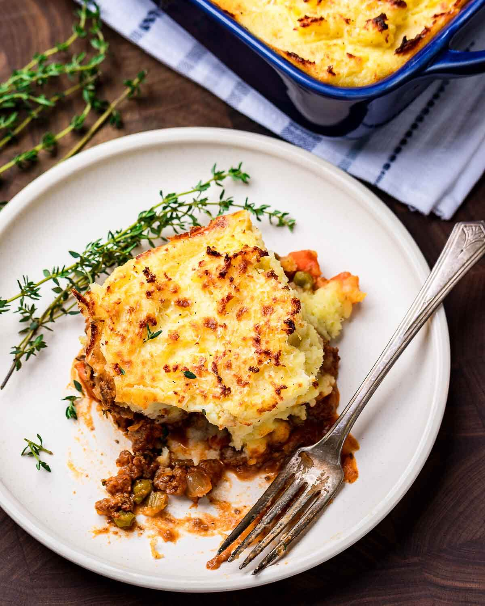

Shepherd's Pie

Wonderful any time of year but especially for St Paddy's!
Shepherd's pie produces a great aroma rivaled only by its taste.
I always wonder why i don't make this more often!
Ingredients
- 3 1/2 pounds russet potatoes
- 1 1/4 cups parmigiano reggiano
- 3/4 cup heavy cream
- 1 stick butter
- salt and pepper to taste
- 3 large egg yolks
- 2 pounds ground lamb
- 1 1/2 cups frozen peas
- 1 large onion
- 3 celery ribs
- 3 medium carrots
- 5 cloves garlic
- 3 ounces tomato paste
- 1/4 cup ap flour
- 1 12 ounce bottle of Guinness
- 1/4 cup worcestershire sauce
- 1 tbsp fresh thyme
- 1 tbsp fresh rosemary
- 2 cups beef stock
Recipe Steps
- Fill stockpot with potatoes and cover with cold water. Bring to a boil and cook until fork tender (about 25-30 minutes).
- Rice the potatoes in a large bowl. Combine with the heavy cream, melted butter, and 1 cup of parmesan cheese. Taste test the potatoes and season very well with salt and pepper to taste. Once satisfied with the taste, mix the egg yolks into the potatoes.
- Preheat oven to 400f and set one rack in the middle and one towards the top 1/3 of the oven.
- While the potatoes are boiling make the filling. Heat a large heavy pan or pot to medium-high heat then add the lamb.
- Cook until well browned (about 7-10 minutes), then break up the lamb with a wooden spoon or meat masher. Next, add the carrots, onions, and celery along with a pinch of salt. Saute until the veggies are soft (about 5-7 minutes) then add the garlic and cook for another 1-2 minutes or until fragrant.
- Add the tomato paste, stir, and cook for 3 minutes. Next, add the Guinness and turn the heat to high. With a wooden spoon scrape the bottom of the pot to remove all of the brown bits. Cook until the liquid has almost completely evaporated (about 3-4 minutes).
- Turn the heat down to medium and add the flour. Cook for 1-2 minutes or until there is no white flour remaining in the pan. Add the beef stock, thyme, rosemary, peas, and Worcestershire sauce. Bring to a boil. Once boiling, lower the heat to a simmer and cook until the liquid has reduced by half.
- Taste test the filling and adjust salt, pepper, thyme, or rosemary if required.
- Add the filling to a 9x13" baking dish. Spread the mashed potatoes on the top and with a fork or spoon fluff the potatoes making mounds or points. Sprinkle the remaining 1/4 cup of grated parmesan.
- Bake for 20 minutes in the center of the oven. Move the dish towards the top of the oven and broil for 1-3 minutes or until well browned but not burnt. Watch carefully! Let the shepherd's pie sit for 10 minutes before eating so that it can settle. Enjoy!